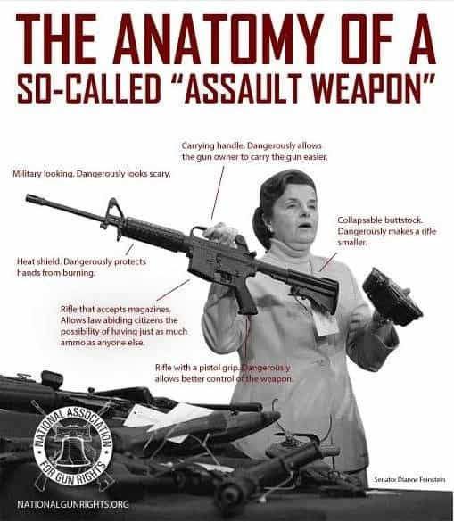
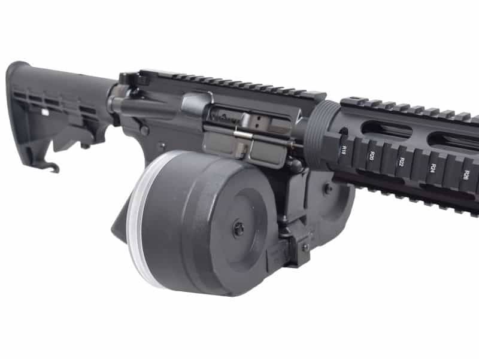

Luke Stranahan is an engineer by trade and an armed patriot by inclination. He writes for Return of Kings as a leisure pursuit and an attempt to do his part to help reverse the slide into moral decrepitude of modern society. Follow him on Twitter.


“He who controls the language controls the masses.” I hate quoting such a leftist like Saul Alinsky, but the man has a point here. Liberals, unlike people of reason, seem to delight in their ignorance of what the terms tossed around in the gun control debates actually mean, or at least they don’t care at all. This week’s article will list some popular gun control buzzwords, what they actually mean, and what they don’t.
The AR-15 is a rifle of some controversy on the national scene due to its reputation on the left as a scary, black killing machine, and on the right as a proven, affordable, ergonomically friendly rifle used as home protection by millions of Americans.
What it really is: The AR-15 is a trademark registered to Colt Firearms. Originally developed by the Armalite division of the Fairchild Engine and Airplane Corporation, the Armalite Rifle Design 15 was a select fire prototype rifle that led to the design of the military M-16. Colt, who received the government contract to make the M-16, holds the license to use the AR-15 model name for their civilian rifles. All other “AR-15” style rifles made by other companies are technically “clones” and not actual AR-15s, but the name is used in contemporary slang to mean AR-15 style rifle made by any manufacturer. They are ALL semi-automatic only.
What it is not: It is not “Automatic Rifle 15”, nor is it “Assault Rifle 15,” nor “15 rounds a second.”
This term is tossed around to imply that a rifle or pistol is a bullet spraying killing machine that all you have to do is hold down the trigger and people die.
What it really is: Fully automatic rifles, per se, are actually not made anymore. A fully automatic rifle will discharge a round, eject the old one, chamber a new one, and then fire it and repeat the cycle until you either run out of ammo, release the trigger, or melt the barrel. Many old machine guns and sub-machine guns were fully automatic. Now, most rifles with a fully automatic option are correctly called “select fire,” which means they have fully automatic and semi-automatic firing modes.
Fully automatic weapons are illegal to manufacture for civilian use. Any fully automatic rifle or sub-machine gun in civilian hands must have been registered prior to the 1989 ban, and requires an extensive background check and special stamp. They are also prohibitively expensive for most Americans to own.
What it is not: No AR-15 is fully automatic. No civilian owned legal gun, other than those mentioned above, is fully automatic. Any gun used in a mass shooting, 99 times out of 100, in the US, is not fully automatic. The only possible exception is foreign guns smuggled in, or stolen military guns, both of which are damn hard to get.

M-16s have a position for automatic fire; AR-15s don’t. It’s that simple.
This term is highly misunderstood by the left. A synonym is “auto-loading.”
What it really is: Semi-automatics, or autoloaders, will fire a round, eject it, and chamber a new round with one press of the trigger. The trigger must then be released far enough to reset the sear, then can be pressed again for another shot.
What it is not: Semi-automatics are not fully automatic. It is very hard, outside of a machine shop, to modify a semi-automatic into a fully automatic, and it’s almost easier to make a new gun from scratch than attempt it. This is done on purpose to prevent conversions by people with normal skills. All civilian rifles, with a very rare grandfathered exception outlined above, are semi automatic.
“Assault Rifle” is a term used to describe a specific category of military firearm.
What it really is: Assault rifles are lightweight rifles that fire intermediate cartridges like the .223/5.56×45 and the 7.62×39 and have select fire operation. The most common used today are the M-16/M-4 and the AK-47/AK-74 families of rifles. They are used by militaries worldwide.
AK-47. That big handle above the trigger is the safety. See the two dimples in its downward path; those are full auto, and semi auto, respectively, because it’s an Assault Rifle, and has full auto.
What it is not: AR-15s, and other civilian-legal semi-automatic rifles are NOT assault rifles, because they lack the select-fire capability of assault rifles. While they may LOOK similar, due to use of modern materials, ergonomic features, and similar goals of design, they are legally nowhere near the same thing.
“Assault Weapon” is a term coined by liberals when they tried to call a semi-automatic rifle an Assault Rifle and got called on their bullshit.
What it really is: This term has no meaning. It’s a liberal inspired piece of mental masturbation that tries to push the point that a gun is somehow scarier if it has military inspired accessories on it and is black. It’s a con game run by the left to make you believe that they only want to ban SOME guns, and not all the other ones that behave and shoot exactly the same, but aren’t black.
What it is not: Non-applicable.

This one hasn’t been seen lately, not since the DC sniper.
What it really is: A magnum caliber bolt action or semi-automatic rifle with a scope and a good trigger capable of making long range shots. Most deer rifles can be called sniper rifles, which is why the liberals usually back way off on this one since it tends to mobilize the Elmer Fudd Army, the reserve troops of the NRA, who don’t care about everyone losing their AR-15s, but will bring the heat if you go after their Remington.
What it really isn’t: Any small-bore rifle of a wimpy cartridge, like a .22. The .223/5.56×45 round, despite the reputation it has amongst the left, is actually a fairly wimpy round that is severely running out of steam at 500 yards range.
This term was coined by the left for any magazine that holds more cartridges than they think it should (i.e. zero.)
What it really is: A true hi-cap mag is one that holds more ammo than the gun was designed to hold in one mag. Usually, these things are aftermarket, cumbersome, and heavy. For AR-15’s, the true hi-cap magazines are drum mags, and coffin mags that hold upwards of 50 rounds a piece. I don’t recommend the real high-caps for anything other than range toys; the Magpul Pmag-40 is about as high as I’d go.
What it is not: The AR-15 and its clones typically ship with either 20 round mags, or 30 round mags. Those are NOT high-capacity, they are STANDARD capacity, as they are what the manufacturer recommends. It doesn’t matter what the limp-wristed, leftist reporters who want only single shots to be legal, but they try to own the language to own the debate anyway. Fun fact: the guy that shot Gabby Giffords was using hi-cap Glock mags, and got stopped because he dropped the one he was going to load.

Select Fire makes a difference on a gun’s deadliness, and it could be argued that magazine capacity does, too, but the following are some ergonomic improvements that the left thinks makes guns more deadly because they look scary and are black.
What they really are: A collapsible stock can be adjusted to multiple positions shorter than fully extended to suit shooters of lesser stature (little girls) and allow for easier entry and exit of vehicles while carrying the rifle. They also store easier in cases and safes.
Pistol grips are ergonomic enhancements that make your hand sit at a more natural angle, allowing for a better grip on and control of the weapon. They will poke you in the back when you sling it over a shoulder, though.
What they are not: A collapsible stock is not a magical device that makes the gun either 50% smaller or invisible, depending on which leftist rag you read. It will reduce the length of a rifle maybe 10%, and it’s not worth getting upset over. A pistol grip stock is not another magical device that makes the gun more deadly.

There is a big debate about end of barrel attachments. Shotguns get chokes, but a rifle doesn’t really need anything, so you can put things like flash hiders, suppressors, and various spiky things that are kind of dumb, like door breachers, on them.
What they really are: A threaded barrel has threads cut around the outside of the muzzle end so that you can screw something onto it. A flash hider is one of those devices, it deflects the outgoing fiery gas out of the immediate upward direction from the barrel so that you are not rendered night blind. A suppressor makes the rifle or pistol quieter so you do not need hearing protection to shoot them. A muzzle brake deflects combustion gas backwards and makes the gun have less felt recoil, but also makes it louder and pisses off the guy shooting next to you.
What they are not: None of these devices make the gun any more deadly; they just make them easier to control, which actually makes them safer to use.
This is a recent hyperbole used by the left.
What it really is: There aren’t any truly “explosive” handgun or small-bore rifle bullets out there. There are tracers, which glow with phosphorescence coating on the bullet ignited by the friction of the barrel so you can see the path of the bullet and there is incendiary ammo, which has a nose cone with some extra gunpowder in it that goes off to try to set things that can burn on fire, like clothing and tents, and there are frangible rounds that simply split apart upon impact, but, to my knowledge, exploding rounds are for things like artillery and grenades.
What it really isn’t: There simply is not enough room in a small bore bullet to pack enough explosive (like gunpowder) to do any sort of real additional damage that more bullet wouldn’t cause. I would be more scared of a wicked hollow point than an “explosive” round.
See the little extra powder up top?
These terms the left use interchangeably to make their legislation more appealing:
What they really are: Considering all the guns rights that have been lost already over the past 100 years, a “compromise” to the liberals is one where you give up some of your rights, because they want to take them all, and you want to keep them all. “Common sense” is simply a lie that they use to make their oppressive legislation sound smart.
What they aren’t: These terms are buzz-words designed to slip in violations of your rights, and they are not honest discourse. The only compromise offered liberals on gun control should be “Shut up, never mention your ideas again, and I won’t shoot you for your treason.”
This military term for an area related to the arms manufacturing industry has been hijacked to sensationalize any shooting.
What it really is: An arsenal is a place where guns and/or ammunition is made, repaired, or maintained. For instance, the Lake City Ammunition Plant, which makes a lot of US military ammo, is an arsenal.
What it is not: It is not a rifle, two pistols, and 73 rounds of ammunition, like reported by a breathless bombshell with big tits on the evening news. That’s not even a good start.
Don’t use this knowledge preemptively; wait until a liberal misspeaks, gently correct them, and suggest that they become educated before talking about the topic again. They never will, so you should be able to shut them down for quite some time with points like these. Add your own in the comments below.
 If you like this article and are concerned about the future of the Western world, check out Roosh's book Free Speech Isn't Free. It gives an inside look to how the globalist establishment is attempting to marginalize masculine men with a leftist agenda that promotes censorship, feminism, and sterility. It also shares key knowledge and tools that you can use to defend yourself against social justice attacks. Click here to learn more about the book. Your support will help maintain our operation.
If you like this article and are concerned about the future of the Western world, check out Roosh's book Free Speech Isn't Free. It gives an inside look to how the globalist establishment is attempting to marginalize masculine men with a leftist agenda that promotes censorship, feminism, and sterility. It also shares key knowledge and tools that you can use to defend yourself against social justice attacks. Click here to learn more about the book. Your support will help maintain our operation.
Read More: Gun Control Is Not The Answer To Islamic Terrorism